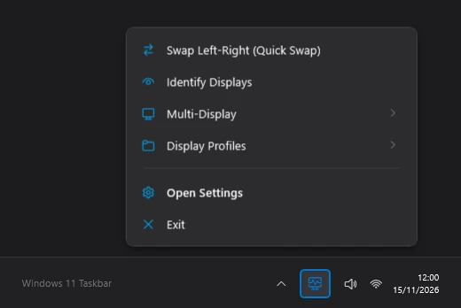
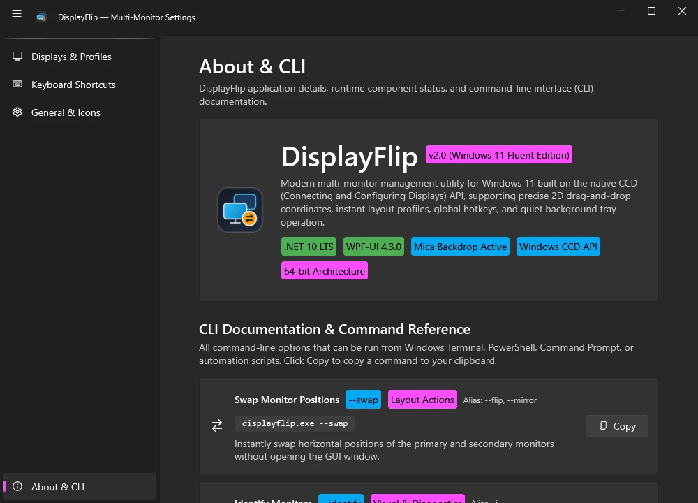

Dual Screens Orchestrated In One Motion
Save exact monitor coordinates, wake sleeping displays from Solo mode, and flip primary roles cleanly.

Watch Windows Display Modes Morph Live
Preview how DisplayFlip updates coordinates, active power state, and CLI syntax across common multi-screen triggers.
Extends desktop across BOE08D7 (Left Primary) and MSI40B7 (Right Extended) using saved coordinates.
DisplayFlip.exe --extend
Win32 CCD
Machined Details Across Every View
Every DisplayFlip module solves a concrete multi-monitor friction point without background clutter.
Conflict-Guarded Global Shortcuts
Bind six system-wide display triggers and per-profile hotkeys using canonical Windows key normalization.

Bilingual Live Switch & Startup
Launch silently via Windows startup and toggle English or Indonesian live without restarting.

Native Taskbar Quick Menu
Right-click the Windows 11 notification tray anytime for Quick Swap, Identify, Solo modes, or saved profiles.

Headless CLI & Diagnostic Reference
Trigger profiles from Stream Deck, AutoHotkey, or PowerShell with JSON export and per-call language flags.

Why Win32 SetDisplayConfig Outperforms Win + P
Built-in projection shortcuts cycle four generic states and forget exact monitor placement. DisplayFlip writes validated path topology directly through Windows CCD.
Download DisplayFlip v1.1.0
Verified x64 builds on .NET 10 LTS. Completely local with zero telemetry.
DisplayFlip-v1.1.0-win-x64.zip
Compact 6.87 MB executable requiring Microsoft .NET 10 Desktop Runtime. Fastest cold start for daily tray use.
DisplayFlip-v1.1.0-Standalone-win-x64.exe
Zero external prerequisites with the full runtime bundled inside. Drop onto a USB drive and run anywhere.
Frequently Asked Questions
Quick answers about packages, background tray residency, and Win32 multi-monitor safety.
Which package fits my Windows PC best?
Download the 3 MB ZIP if your PC has .NET 10 Desktop Runtime. Pick the 74 MB Standalone EXE if you want zero prerequisites.
Does closing the main window stop hotkeys?
No. Closing minimizes DisplayFlip quietly to the Windows notification area so hotkeys stay active until you choose Exit.
Can I script profile switches via PowerShell?
Yes. Run DisplayFlip.exe --apply "Profile", --swap, --solo 1, or --list --json directly.
Does DisplayFlip collect usage telemetry?
Never. Profiles, hotkeys, and preferences stay strictly local on your Windows device.